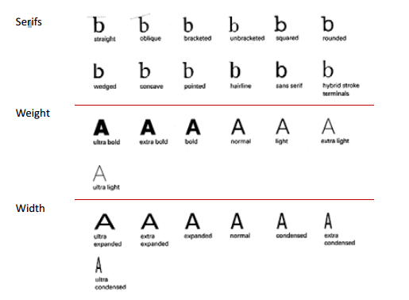
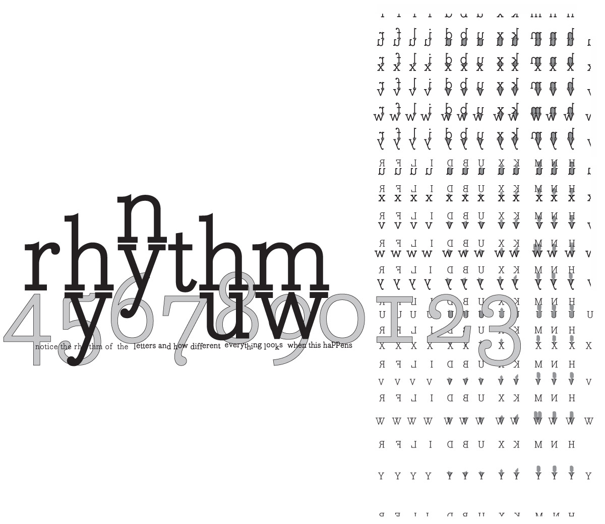
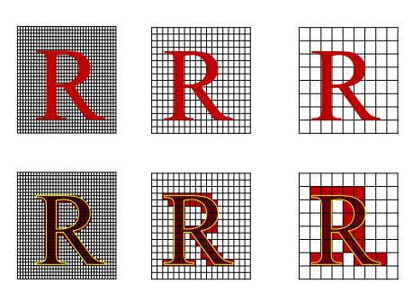
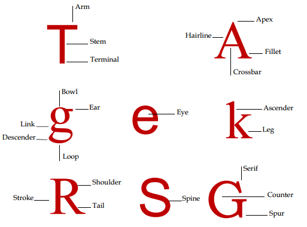

What's the Type?
In typography, a typeface (also known as font family) is a set of one or more fonts each composed of glyphs that share common design features. Each font of a typeface has a specific weight, style, condensation, width, slant, italicization, ornamentation, and designer or foundry (and formerly size, in metal fonts).Every typeface is a collection of glyphs, each of which represents an individual letter, number, punctuation mark, or other symbol. The same glyph may be used for characters from different scripts, e.g. Roman uppercase A looks the same as Cyrillic uppercase А and Greek uppercase alpha. There are typefaces tailored for special applications, such as map-making or astrology and mathematics.
About the Type
Type plays different roles in visual design. For Example: Textual content, collective shape, purely visual element. The visual aspects of the type can be used to convey the meaning of the written text it represents, shape of the type supporting the meaning of the text

Terminology
Typeface (font): design of a single set of letterforms, numerals and special characters unified by consistent visual properties
Type styles: different modifications of a typeface which retain it's essential visual properties for instances roman, bold, italic, condensed, etc
Type family: the complete range of all variation type styles of a typeface design including roman, italic, bold, condensed.

Digital Fronts
Traditional printing press machines used hot metal typefaces to print text, each printting machine had it's own range of typefaces.
Mordern computers and printers use digital typefaces.
There are three main formats for digital typefaces
- - Bitmap
- - PostScripts Type
- - TrueType
Bitmap Fonts
Bitmap Fonts are like the actual representations of the typefaces. Their actual images like raster based images.
Bitmap fonts
- - mainly used by computer displays
- - have a fixed size and resolution

PostScript Fonts
PostScript describe the outline of typefaces, similar to vector base images, are scalable (their size can be changed), are device independent ( can be used on difference computers or printers unlike bitmap)
TrueType Fonts
TrueType Fonts and PostScript can't be displayed directly on a computer display screen, need to be converted to bitmaps, may not look good at low resolution.Hints are special instructions used for displaying fonts at low resolution aim to improve how the fonr look at low resolution.
Screen Fonts
The main principle is that curves: the brightness of each pixel will be redistributed (Remapping brightness values).
Shape Of The Letters
The alphabet is a series of visual signs each letter has a unique visual form. Shape of the letter is likely to have evolved, based on the properties of early writting tools

Classification of typefaces
A basic system for classifying typefaces was devised in the nineteenth century, when printers sought to identify a heritage for their own craft analogous to that of art history.
- - Old style: based on Roman chisel-edged letters
- - Transitional: similar to old style with more contrast betwwen thin and thick strokes
- - Modern: mechanical drawing rather than chiseledged letters with extreme thin and thick contrast
- - Slab serif: heavy and slab like serifs with minimal contrast between thin and thick lines
- - Sans serif: without serifs and no thin and thick lines
- - Script: resemble handwriting, giving a human touch